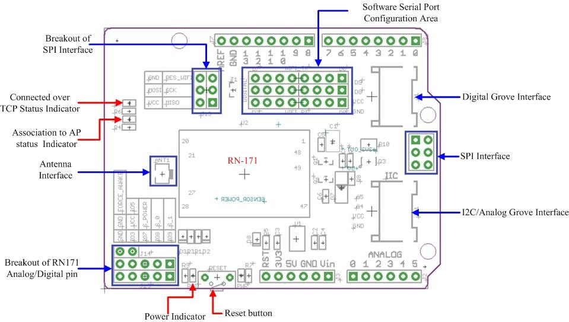
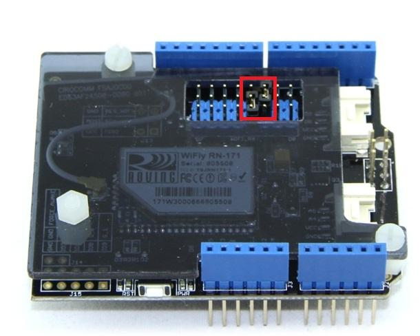

This Wifi Shield utilizes a RN171 wifi module to provide your Arduino/Seeeduino with serial Ethernet's function. It only takes two pins to hook your device up to 802.11b/g wireless networks with this shield. It features an independent antenna which can cover a wider range and transmit stronger signals. With supports for common TCP, UDP and FTP communication protocols, this Wifi Shield can meet needs of most wireless network projects, like smart home networks, robot controls or personal weather stations,etc. We prepared an easy and convenient command set for this shield so that you can use neat and concise code to run the function.

Download the Wifi Shield Library on github, unzip it into the libraries folder of Arduino.
#include <Arduino.h>
#include <SoftwareSerial.h>
#include "WiFly.h"
#define SSID "YourAP"
#define KEY "password"
#define AUTH WIFLY_AUTH_WPA2_PSK // or WIFLY_AUTH_WPA1, WIFLY_AUTH_WEP, WIFLY_AUTH_OPEN
// Pins' connection
// Arduino WiFly
// 2 <----> TX
// 3 <----> RX
SoftwareSerial uart(2, 3);
WiFly wifly(&uart);
//WiFly wifly(&Serial1); // for leonardo, use hardware serial - Serial1
void setup() {
uart.begin(9600);
Serial.begin(9600);
Serial.println("--------- WIFLY TEST --------");
// wait for initilization of wifly
delay(3000);
uart.begin(9600); // WiFly UART Baud Rate: 9600
wifly.reset();
Serial.println("Join " SSID );
if (wifly.join(SSID, KEY, AUTH)) {
Serial.println("OK");
} else {
Serial.println("Failed");
}
// get WiFly params
wifly.sendCommand("get everthing\r");
char c;
while (wifly.receive((uint8_t *)&c, 1, 300) > 0) {
Serial.print((char)c);
}
if (wifly.commandMode()) {
Serial.println("Enter command mode. Send \"exit\"(with \\r) to exit command mode");
}
}
void loop() {
while (wifly.available()) {
Serial.write(wifly.read());
}
while (Serial.available()) {
wifly.write(Serial.read());
}
}
1. Connect D2(RX) and D3(TX) of software serial port with TX and RX of WiFi shield.

2. Change the code to update your access point info
#define SSID "YourAP" #define KEY "password" #define AUTH WIFLY_AUTH_WPA2_PSK // or WIFLY_AUTH_WPA1, WIFLY_AUTH_WEP, WIFLY_AUTH_OPEN
3. Download the sketch to Arduino, open Serial Monitor, set baud rate to 9600, set enter key to Carriage return. WiFi Shield will output some messages and enter command mode. In command mode, you can enter some commands to interact:
4. For further usage, please try other examples of the WiFi shield library.
If the Wifi Shield doesn't response any commands, try to do factory reset following the guide